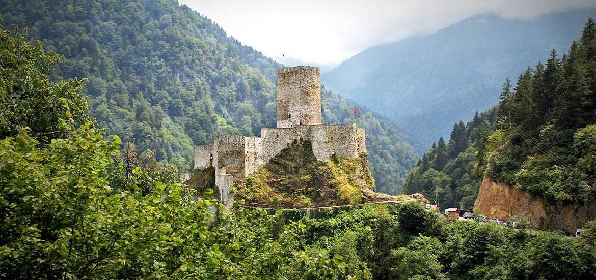

ZİL KALE
Zilkale Rize’nin Çamlıhemşin ilçesinde Çat Vadisi üzerinde bulunan birinci derece arkeolojik sit alanı içerisinde yer almaktadır. Turizm açısından yerli yabancı birçok turistin ilgisini çeken Zilkale, denizden 750 metre yükseklikte, Fırtına Deresi’nin batı yamaçları üzerinde konumlanmıştır. Kalenin dış kale, orta surlar ve iç kale olmak üzere üç bölümü bulunmaktadır. Orta kale kısmı ise muhafız binası, şapel ve baş kule bölümlerine sahiptir.
14. yüzyılda Trabzon İmparatorluğu döneminde inşa edildiği tahmin edilen Zilkale, İspir’e ulaşan önemli bir Ortaçağ kervan yolunun güvenliğini sağlamak amacıyla kullanılmıştır. Bir süre sonra Osmanlı tarafından fethedilen kale, askeri amaçla kullanılmaya devam etmiştir. Öyle ki kalede bulunan iki el topu günümüzde Trabzon Müzesi‘nde sergilenmektedir. Zilkale ile ilgili halk arasında ”kaleyle dere arasında gizli bir geçidin olduğu ve zamanla kapandığı” gibi birçok efsane anlatılmaktadır.
Neden gitmeliyim? İç kale, dış surlar ve orta surlar olmak üzere üç bölümden oluşan Zil Kale, sarp bir kaya üzerinde görkemli bir görüntüye sahiptir. Kültür ve Turizm Bakanlığı tarafından restore edilen ve 2011’de restorasyonu işlemleri tamamlanan Zilkale, Rize’nin en popüler yapılarından biri olarak, şehirde görülmesi gereken yerlerin başında gelmektedir. Mistik ve görkemli bir atmosfere sahip olan kalede, piyanist Tuluyhan Uğurlu gibi isimlerin katıldığı konser programları da düzenlenmektedir ve özellikle muazzam manzarası burasını çok ilgi çekici kılmaktadır.
➊Adres: Zilkale, Çamlıhemşin, Rize
➋Ziyaret saatleri: 08.00-17.00